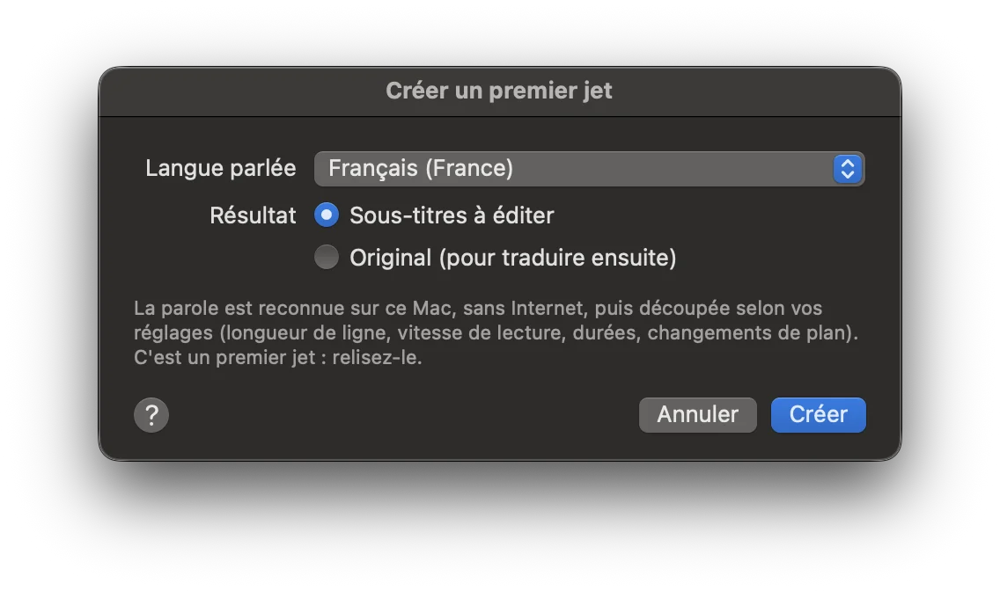

Créer les sous-titres à partir de la seule vidéo
Pas encore de sous-titres ? Subelle écoute les dialogues et les transforme en sous-titres déjà calés sur la voix, grâce à la reconnaissance vocale d'Apple.
- Ouvrez la vidéo.
- Choisissez Outils → Créer un premier jet…, puis la langue parlée.
- Subelle découpe les dialogues en sous-titres selon vos réglages : longueur des lignes, vitesse de lecture, durées, changements de plan.
- Relisez et ajustez dans la forme d'onde.
Avec macOS 26 Tahoe ou plus récent.
